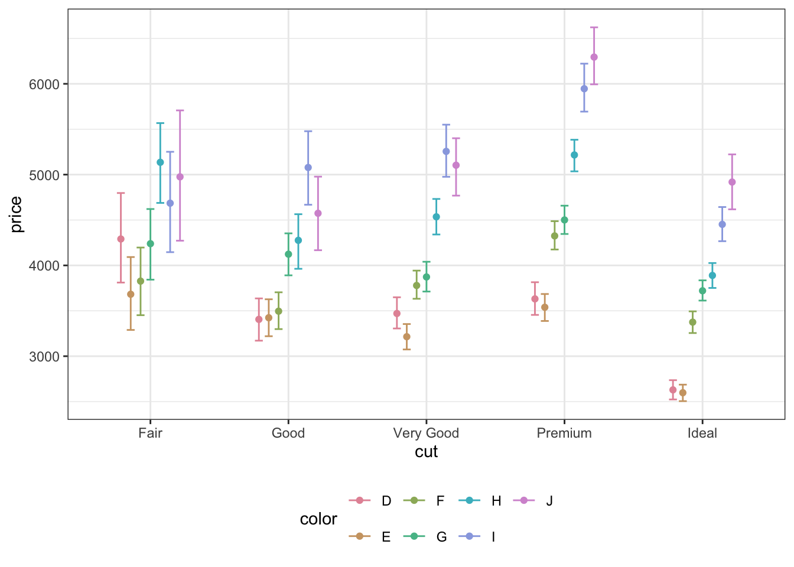
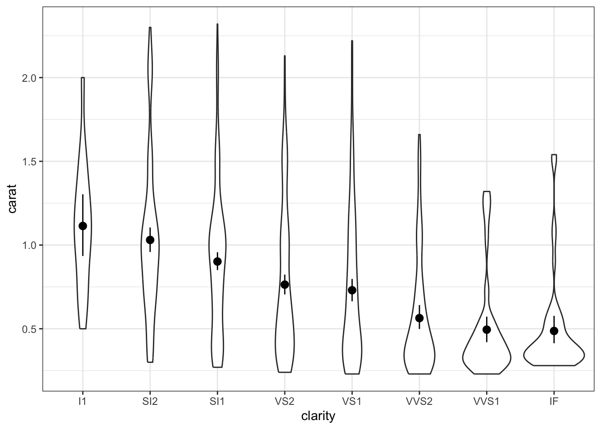
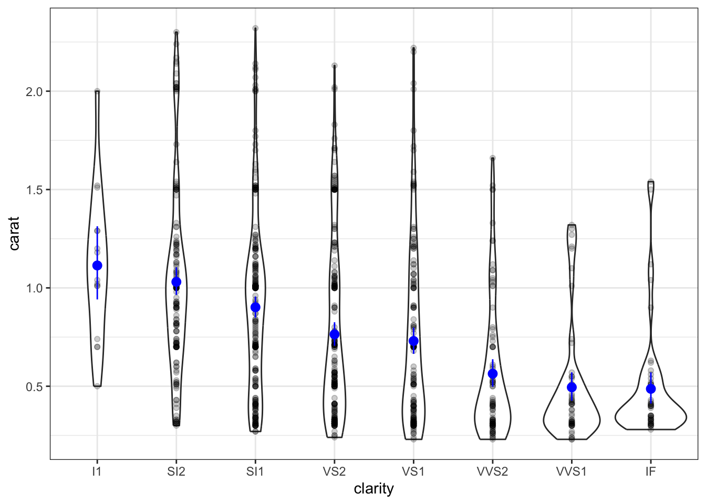
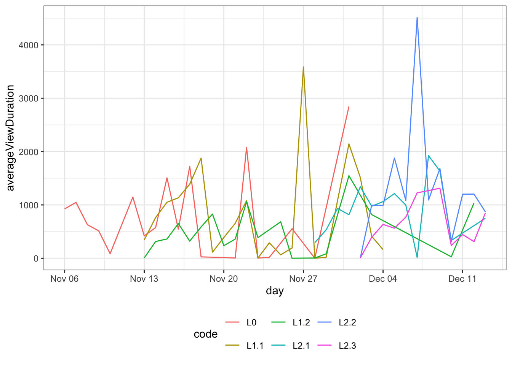
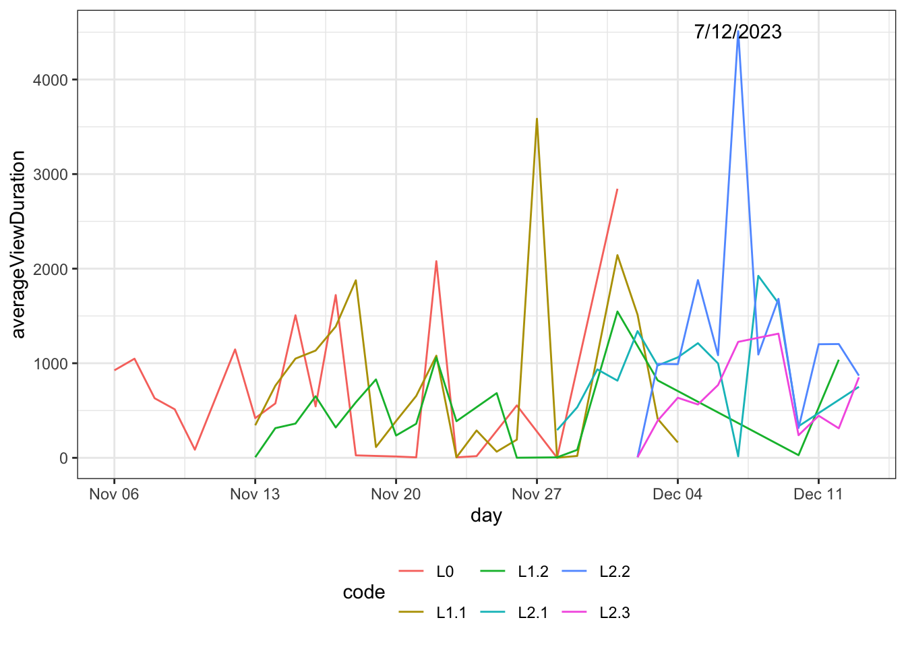

# A tibble: 53,940 × 10
carat cut color clarity depth table price x y z
<dbl> <ord> <ord> <ord> <dbl> <dbl> <int> <dbl> <dbl> <dbl>
1 0.23 Ideal E SI2 61.5 55 326 3.95 3.98 2.43
2 0.21 Premium E SI1 59.8 61 326 3.89 3.84 2.31
3 0.23 Good E VS1 56.9 65 327 4.05 4.07 2.31
4 0.29 Premium I VS2 62.4 58 334 4.2 4.23 2.63
5 0.31 Good J SI2 63.3 58 335 4.34 4.35 2.75
6 0.24 Very Good J VVS2 62.8 57 336 3.94 3.96 2.48
7 0.24 Very Good I VVS1 62.3 57 336 3.95 3.98 2.47
8 0.26 Very Good H SI1 61.9 55 337 4.07 4.11 2.53
9 0.22 Fair E VS2 65.1 61 337 3.87 3.78 2.49
10 0.23 Very Good H VS1 59.4 61 338 4 4.05 2.39
# ℹ 53,930 more rowsP5 // Визуализация данных
Основные задания
Описание данных
Сегодня мы будем работать с данными о бриллиантах. Это датасет diamonds, который входит в пакет ggplot2.
В нем есть следующие переменные:
carat— вес бриллианта (в каратах)cut— качество огранкиcolor— цвет бриллианта (отD— худший — доJ— лучший)clarity— чистота бриллианта (отI1— худшее — доIF— лучшее)x,y,z— длина, ширина и высота бриллианта (в миллиметрах)depth— глубина бриллианта, рассчитываемая как \(\frac{2z}{xy}\)table— отношение ширины верхней площадки блиррианта к его наибольшей ширинеprice— цена бриллианта (в долларах США)
#1
- Подгрузите пакет
tidyverseк текущей сессии R. - Проверье доступен ли вам датасет
diamondsиз пакетаggplot2. Выведите структуру датасета, посмотрите, какие переменные и какого типа в нём содержатся. - Отберите 1000 случайных строк из данных и сохраните их в переменную
diam1000. Используйтеset.seed(123).
Описание формата инпута.
Подсказки
- Чтобы получить доступ к датасету
diamonds, достаточно подключть пакетtidyverse. Отдельно подгружатьggplot2не нужно, так как он подгружается в месте с другими пакетамиtidyverse. - Отобрать строки можно с помощью функции
slice(). - Сгенерировать 1000 случайных значений поможет функция
sample().
#2
Давайте визуализирует связаимосвязь между длиной (x) и шириной (y) бриллиантов. Возьмем для этого маленький датасет из 100 наблюдений (diam1000).
- Создайте базовый слой для визуализации.

- Расчертите оси на базовом слое. По оси
xпойдёт длина бриллианта, а по осиyего ширина.
Описание формата инпута.
Подсказки
- Построение графика начинается с функции
ggplot() - Для задания осей используется функция
aes()внутри функцииggplot()
#3
Отлично! Мольберт мы достали. Теперь надо сказать ggplotу, как мы будем отображать наши наблюдения.
- Перейдите на новый слой и задайте отображение наблюдений с помощью точек.
- Добавьте ещё один слой с линией тренда.
Описание формата инпута.
Подсказки
- Чтобы перейти на новый слой, понадобится оператор
+ - За то, как будут отображаться наблюдения, отвечают функции
geom_..() - Линия тренда — это сглаживание (smoothing) отображаемой зкономерности.
#4
Сгруппируйте бриллианты по уровню чистоты (clarity), отобразив эту переменную с помощью цвета.
Описание формата инпута.
Подсказка
Функция aes() задает в общем случае вообще любые эстетики — форматирование графика, связанное с данными. Оси — это лишь частный случай эстетик.
#5
Супер! Мы разобрались с базовыми принципами работы в ggplot() — эстетики, слои, геомы. Теперь нарисует что-то более серьезное. Будем теперь работать с полным датасетом diamonds.
В ggplot2 есть функции, которые позволяют прямо при построении графика агрегировать наши данные. Воспользуемся их возможностями.
- Визуализируйте зависимость средней цены бриллиантов (
price) от качества огранки (cut).
- Добавьте к средним доверительные интервалы — так визуализация будет более корректно отображать закономерность.
Описание формата инпута.
Подсказки
- Чтобы агрегировать данные внутри
ggplot2, есть функцияstat_summary() - Если в результате агрегации получается одно значение, его необходимо передавать в аргумент
fun. Если несколько, тоfun.data. - Среднее рассчитывается классически. Доверительный интервал можно получить через
mean_cl_boot. - Иногда функция падает и просит установить пакет
Hmisc. Он устанавливается как и любой другой пакет черезinstall.packages().
#6
Визуализация какая-то слишком простенькая. Давайте добавим еще переменных.
- Сгруппируйте бриллианты по цвету (
color), отобразив эту переменную с помощью цвета на графике.
Мда… Получилось какое-то дикое месиво. Давайте немного причешем визуализацию. Например, подправим расположение точек, чтобы они лежали не на одной прямой, а рядом друг с другом — ведь небольшие отклонения вправо-влево по оси x для нас не имеют значения, так как по горизонтальной оси расположена категориальная переменная.
- Расположите средние и доверительные интервалы рядом друг с другом, не потеряв при этом уже заданные группировки.
Стало гораздо приятнее. Однако вы видим, что горизонтальные линии, обозначающие границы доверительных интервалов, слишком длинные и касаются друг друга. Надо обеспечить их личным пространством.
с. Уменьшите ширину горизонтальный линий на границах доверительных интервалов, чтобы они не касались друг друга.
Описание формата инпута.
Подсказки
- За положение элементов относительно друг друга отвечает аргумент
position. - Чтобы поставить элементы рядом, пригодится функция
position_dodge(). - У каждого геома есть много настроек, которые называются весьма интуитивно. Например, ширину горизонтальный линий errorbar’ов задает аргумент
width.
#7
Супер! Мы критически близки к успеху! Осталось поработать над оформлением графика.
- Измените тему визуализации на черно-белую, чтобы картинка стала более контрастной.
- У нас на графике есть легенда, которая занимает прилично так места справа. Сместите её вниз, чтобы пространство графика использовалось более оптимально.
Описание формата инпута.
Подсказки
- Сменить тему всего графика можно используя предустановленные темы
ggplot2, которые задаются через ноывй слой. Есть много тем, однако наиболее важные для нас и часто используемые этоtheme_bw()иtheme_minimal(). - Тему можно кастомизировать практически как угодно. Для этого есть масса аргументов функции
theme(). Так, позицию легенды можно задать через аргументlegend.position.
#8
Поработаем над цветовой палитрой. Она неплоха, но некоторые цвета можно спутать, а желтый на белом фоне выглядит крайне неконтрастно.
Задайте собственную цветовую палитру для графика.
В примере ниже использован пакет colorspace, в котором есть уже предустановленные цветовые палитры.

Описание формата инпута.
Подсказки
- Кастомизировать экстетики можно с помощью фукнций
scale_.._..().
#9
Почти готово! Осталось только подписать оси так, чтобы было понятно, что это такое.
Задайте русские названия осей и легенды, а также добавьте заголовок, подзаголовок и подпись на график.
Описание формата инпута.
Подсказки
Чтобы задать различные подписи для графика, пригодится функция labs() (от labels).
#10
Ну, вот мы и построили публикабельную визуализацию. Чтобы её можно было отправить куда-либо — в журнал, на постер, в презентацию — её необходимо экспортировать.
Экспортируйте построенный график в формате JPEG, размером 20×20 см в таком разрешении, чтобы он качественно смотрелся в печатном виде.
Описание формата инпута.
Подсказки
- Сохранить построенную визуализацию поможет функция
ggsave(). - В ней можно задать все необходимые параметры — размер, разрешение, формат файла.
- Подходящим для печати разрешением считается 600 dpi (dots per inch, точки на дюйм).
#11
Мы задали тему графика внутри кода его построения. В таком случае, когда мы начнем строить другой график, будет импользована дефолтная серая тема.
Установите черно-белую тему на всю сессию работы R.
Описание формата инпута.
Подсказки
Есть крайне полезная функция theme_set(), которая позволяет установить какую-либо тему для всей текущей сессии R — тогда нам не придется задавать тему для каждого графика отдельно.
#12
Посмотрим на другие способы визуализации разных переменных.
- Визуализируйте распределение цены бриллиантов с помощью гистограммы.
На такой визуализации мы видим распределение цены в целом. Однаконам может быть интересно распределение цены в зависимости от каких-либо других характеристик.
- Визуализируйте распределение цены бриллиантов в зависимости от их цвета (
color). Отобразите группирующую переменную с помощью цвета заливки столбиков гистограммы.
Симпатишно, но не то чтобы очень интерпретабельно. Надо найти другой способ отображения группировки.
- Визуализируйте распределение цены бриллиантов в зависимости от их цвета. Отобразите группирующую переменную так, чтобы каждая группа была расположена на отдельном подграфике.
Описание формата инпута.
Подсказки
- Для отображения гистограммы есть специально обученный геом.
- Значения оси
yпри построении гистограммы рассчитываются автоматически. - Разбиение графика на несколько подграфиков называется фасетированием. Для этого придуманы функции
facet_..().
#13
- Визуализируйте распределение цены (без разбиений по каким-либо переменным) с помощью графика плотности распределения.
- Разбейте график плоности распределения на подграфики так, чтобы они выстроились в сетку, в которой по строкам будут идти категории качества огранки, а по столбцам — цвета бриллиантов.
Описание формата инпута.
Подсказки
#14
Постройте столбчатую диаграмму, которая будет отображать частоты по переменной color (цвет бриллианта).
Описание формата инпута.
Подсказки
Здесь может быть два варианта — первый через geom_bar(), второй через geom_col().
#15
Если для распределения дискретной переменной у нас не так много возможностей визуализации, то для распределения непрерывной их гораздо больше.
Визуализируйте распределение цены бриллиантов в зависимости от категории чистоты с помощью ящиков с усами.
Описание формата инпута.
Подсказки
Как делать задание?
Что надо сделать?
Ответ неверный
#16
- Замените ящики с усами на violin plot’ы.

- Замените данные с
diamondsнаdiam1000и добавьте на график средние с доверительными интервалами. Используйтеgeom_pointrange().

- Добавьте на график точки самих наблюдений. Чтобы можно было увидеть, какие точки накладываются друг на друга, задайте им непрозрачность 20%, а чтобы средние с доверительными интервалами выделялись, покрасьте их в синий.

Описание формата инпута.
Подсказки
- Форматирование графика, которое не связано с данными, задается вне функции
aes()с помощью тех же аргументов. - [Не]прозрачность — это альфа-канал изображения.
#17
Теперь построим визуализацию корреляционной матрицы. Для этого есть удобная функция ggcorrplot() из пакета ggcorrplot.
Нам будут нужны новые данные. Будем использовать результаты апробации опросника на доверие к искусственному интелекту. В этих данных есть колонка id, которая задает идентификатор респондента, а все оставшиеся — это пункты опросника, относящиеся к разным шкалам.
Визуализируем корреляции между баллами пунктов по шкале predictability (pr).
Функция ggcorrplot() обязательным аргументов требует корреляционную матрицу. Построим её с помощью следующего кода:
# загрузим данные
taia <- read_csv("https://raw.githubusercontent.com/angelgardt/wlm2023/master/data/pr5/taia_items.csv", show_col_types = FALSE)
taia %>% select(starts_with("pr")) %>% cor() -> cormatПолученная матрица cormat и есть необходимая нам корреляционная матрица.
Визуализируйте взаимосвязи между пунктами шкалы predictability с помощью корреляционный матрицы.
Описание формата инпута.
Подсказки
Как делать задание?
Что надо сделать?
Ответ неверный
#18
В прицнипе, визуализация построена, однако она весьма нехороша. Логичнее было бы отобразить положительные корреляции холодными оттенками, а отрицательные теплыми, так как мы ожидаем положительные корреляции, а красный сигнализирует нам о том, что что-то идет не так.
Кроме того, корреляционная матрица симметрична, поэтому можно отобразить только её нижний угол. И хорошо бы добавить сами значения корреляций на график — тогда легенда будет не нужна. Название графика также облегчит понимание, что это такое.
Настройте отображение матрицы в соответствии с описанием выше.
Описание формата инпута.
Подсказки
Аргументы функции ggcorrplot(), которые пригодятся:
typelabcolorsshow.legendtitle
#19
На первых двух практиках мы генерировали случайные числа и укладывали их в векторы и матрицы. Это все было не просто так. Мы можем использовать их для визуализации статистических закономерностей.
С содержательной стороной вопроса познакомимся совсем скоро — пока же изучим техническую.
- Сгенерируйте 20 выборок по 30 наблюдений из нормального распределения (
rnorm()) с параметрамиmean = 5иsd = 2. Сохраните результат в матрицуsimразмером 30×20. Используйтеset.seed(999).
- Визуализируйтер распределение сгенерированной случайной величины в каждой из выборок на одном графике.
Warning: The `x` argument of `as_tibble.matrix()` must have unique column names if
`.name_repair` is omitted as of tibble 2.0.0.
ℹ Using compatibility `.name_repair`.Описание формата инпута.
Подсказки
Понадобится перевести данные из широкого формата в длинный.
#20
Чтобы изучать, как работает статистика, нам понадобиться добавлять на графики некоторые дополнительные элементы. В данном случае, было бы интересно увидеть, как соотносятся получившиеся распределения со средним значением mean, которое мы задавали при генерации нашей переменной.
Добавьте на визуализацию отображение параметра mean, который мы использовали внутри функции rnorm(), с помощью вертикальной линии.
Описание формата инпута.
Подсказки
Как делать задание?
Что надо сделать?
Ответ неверный
Дополнительные задания
#1
Иногда возникает задача изменить дефолтные шрифты на графике. По умолчанию для графиков берется шрифт без засечек — какой именно, зависит от операционной системы.
Возьмите график, получившийся в задании 9, и замените дефолтный шрифт на шрифт с засечками Times New Roman.
Описание формата инпута.
Подсказки
- Шрифты являются частью темы, поэтому настраиваются через функцию
theme(). - У функции
theme()есть аргументtext, который принимает результат работы функцииelement_text(). - У функции
element_text()есть аргументfamily, через который можно указать семейство шрифтов, которое необходимо использовать при построении графика.
#2
Настроить можно не только тип шрифта, но и кегль.
Учеличьте кегль подписей оси y до 12.
Описание формата инпута.
Подсказки
- У функции
theme()есть еще ряд аргументов. Например, можно задать отдельно параметры названия осей (axis.title.x,axis.title.y) и подписей значений осей (axis.text.x,axis.text.y) - Эти аргументы также принимают результат работы функции
element_text(). - У функции
element_text()есть аргументsize.
#3
А ещё можно развернуть подписи осей на какой-то угол.
Поверните подписи оси x на 90 градусов.
Описание формата инпута.
Подсказки
Как делать задание?
Что надо сделать?
Ответ неверный
#4
При отображении распределений бывает полезно визуализировать, какую часть из распределения все переменной составляет распределение в какой-то конкретной группе.
- Возьмите график из задания 12с и добавьте в фасеты распределение цены позади распределений в каждой группе по цвету. Используйте для общей гистограммы цвет
gray70. - Чтобы гистограммы в каждой группе лучше отличались от общей гистограммы, раскрасьте их по переменной
color. - Скройте легенду, так как цвет дублирует деление по фасетам и не несет дополнительной нагрузки.
Описание формата инпута.
Подсказки
- Понадобится сделать два слоя с гистограммами, в каждом из которых необходимо отдельно задать датасет.
- На слое с общей гистограммой необходимо удалить колонку
color, чтобы невозможно было поделить наблюдения по группам. - Скрыть переменную из легенды можно с помощью функции
guides().
#5
В задании 14 мы построили столбчатую диаграмму, в которой столбцы располагаются в порядке, заданном в переменной color — это упорядоченный вектор. Однако в ряде случаев бывает разумно расположить столбцы в порядке частот.
Задайте порядок отображения столбцов диаграммы по частоте от наибольшей до наименьшей.
Описание формата инпута.
Подсказки
- Для работы с факторными переменными в пакете
forcats, который является частьюtidyverse, есть много функций. Две, которые пригодятся тут:fct_reorder()иfct_rev(). - Понадобиться вариант построения графика через
geom_col().
#6
И добавим еще один слой на столбчатую диаграмму. По оси y отображена частота — это да, однако не всегда можно достаточно точно определить, сколько именно бриллиантов того или итого цвета.
Добавьте лейблы на столбцы диаграммы, на которых будет указанно количество бриллиантов в каждой группе по цвету.
Описание формата инпута.
Подсказка
geom_label()
#7
Совсем скоро мы начнем изучать статистические модели, и будем изучать, насколько они хорошо работают на тех или иных данных. Для этого будем рисовать графики, на которых отображены значения из данных и предсказанные значения модели. Очень много не вполне понятных слов — пока познакомимся с технической стороной вопроса.
Ниже код, который строит модель линейной регрессии, которая позволяет пресказывать значение цены бриллиант по его весу. Скопируйте код и выполните его. В окружении должен создаться объект fit.
fit <- lm(price ~ carat, diamonds)fit представляет собой список, в котором есть вектор fitted.values, который содержит значения, предсказанные моделью.
Постройте диаграмму рассеяния по переменным carat и price и добавьте на неё с помощью линии предсказанные моделью значения.
Описание формата инпута.
Подсказки
Как делать задание?
Что надо сделать?
Ответ неверный
#8
Еще один тип графика, который может встретиться в работе исследователя — это Line Plot. Есть данные о средней продолжительности просмотра лекций данного курса на 14/12/2023.
Визуализируйте динамику изменения средней продолжительности просмотра по дням с начала курса до 13/12/2023.

Описание формата инпута.
Подсказки
Как делать задание?
Что надо сделать?
Ответ неверный
#9
Если на графике случает что-то интересное, будет полезно подсветить это событие. Так, на графике выше мы видим яркий пик роста средней продолжительности просмотра лекции L2.2 7/12/2023. Давайте это обозначим.
Подпишите пик датой, когда он произошел.

Описание формата инпута.
Подсказка
annotate()
#10
Подсветить интересные события на графике можно не только с помощью подписей, но и выделив область, на которую попало интересное событие. Мы видим, что для L1.1 27/11/2023 случился резкий рост глубины просмотра — давайте это выделим красным прямоугольником.
Добавьте слой, на котором будет отображен полупрозрачный прямоугольник, который будет выделять пик роста средней продолжительности просмотра 27/11/2023.
Описание формата инпута.